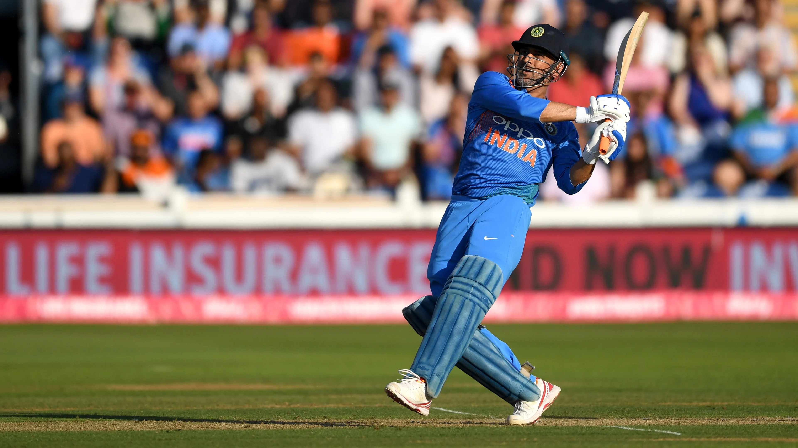

FACTS ABOUT MS-DHONI
MS Dhoni
Full name is Mahendra Singh Dhoni
MS Dhoni
Position in Indian Team is Wicket Keeper and former Captain
MS Dhoni
As a captain He has won
ALL the icc trophies
for Indain Team
MS Dhoni
Has Debuted on
23rd December 2004
against Bangladesh Cricket Team in ODI Format
MS Dhoni
as a captain for
10 years from 2007 to 2017
MS Dhoni
has
scored 3,454 runs as Test skipper
, the highest among wicketkeeper captains
MS Dhoni
smashed an unbeaten 183 against Sri Lanka at Jaipur in 2005, the highest by a wicketkeeper in ODIs.
MS Dhoni
is a captain of CSK IPL TEAM from the 1st season of the IPL
MS Dhoni
has
won 4 IPL trophies
for CSK IPL TEAM
MS Dhoni
holds a record for the
most consecutive innings (84)
in T20I without a duck (from 2007 to 2019)
MS Dhoni
holds the record for most dismissals, 829 (634 catches and 195 stumpings) by an Indian wicketkeeper in international cricket.
MS Dhoni
smashed a record 10,268 runs in international cricket batting at No. 6 or below
MS Dhoni
is the first player to
win 100 matches as captain
in the Indian Premier League./a>
MS Dhoni
has smashed 217 sixes in IPL,
the most by a wicketkeeper.
MS Dhoni
has appeared in a
record nine IPL finals
MS Dhoni
has led his team to
victory in 110 ODIs,
the most by an Indian skipper.
MS Dhoni
He led India in
72 T20Is,
the most by a wicketkeeper
MS Dhoni
enjoys a
record of most dismissals—294